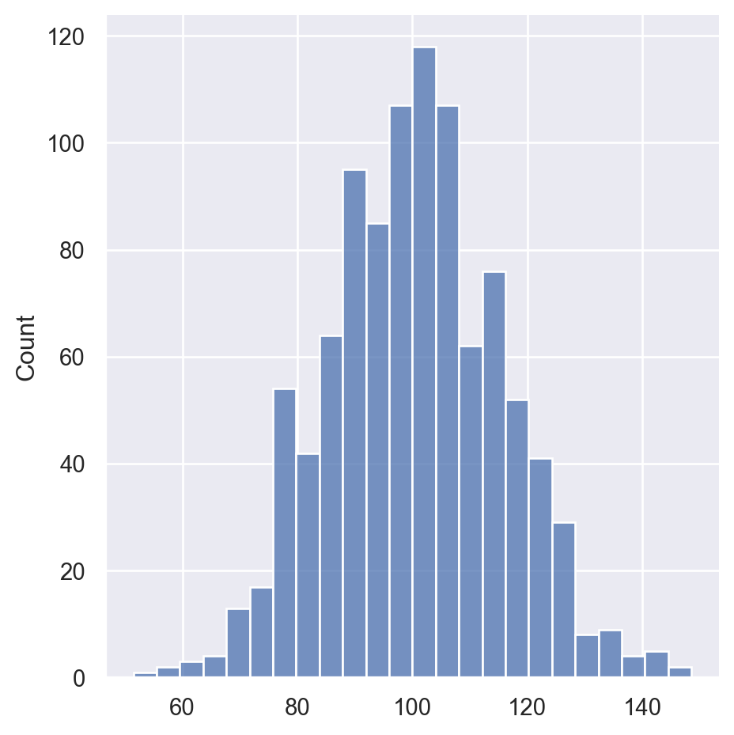

It is always the most important thing to set up a significance level once we start doing statistical analysis. The logic of setting up actually comes from the idea of the tradeoff considering Type I and Type II errors. To illustrate the idea, we will introduce ideas about Type I and Type II errors, and then simulate a one-sample test in an example in python.
Introduction to Type I and Type II Errors
When conducting a hypothesis test there are two possible decisions: reject the null hypothesis or fail to reject the null hypothesis. Hypothesis test uses data from a sample to make an inference about a population. In this process, population parameters are always unknown. In most cases, we are unsure if the inference is correct or not.
There are two possible situation when we reject the null hypothesis. The first case is that there could be a real difference between the popolation and the sample, in which case we made a correct decision to reject the H0. On the other hand, it is also possible that there is not difference between the population and the sample(i.e, the null hypothesis is true) but our sample was different from the hypothesized value due to random sampling variation. In that case we made an error, which we call it the Type I Error.
Similarly, when we fail to reject the null hypothesis there are also two possibilities. If the null hypothesis is really true, and there is not a difference between the popolation and the sample, then we made the right decision. However, if there is a difference in the population, and we failed to reject it, then we made a Type II error.
To make ideas more straight forward, suppose you decide to get tested for COVID-19 based on mild symptoms. There are two errors that could potentially occur:
Type I error (false positive): the test result says you have coronavirus, but you actually don not.
Type II error (false negative): the test result says you don not have coronavirus, but you actually do.
Formula of Type I and Type II Errors
Type I Error: Rejecting H0 when H0 is really true, denoted by $$ and commonly set at 0.05
\[
\alpha = P(Type\ I\ Error)
\]
Type II Error: Rejecting H0 when H0 is really false, denoted by
\[
\beta = P(Type\ II\ Error)
\]
Null hypothesis is…
True
False
Rejected
Type I error, False positive
Correct decision, True positive
Accepted
Correct decision, True negative
Type II error, False negative
How to balance Type I and Type II error?
Here comes a question: How does the setting of alpha affects the two errors? In the following part, we tried several numbers of alpha to test the type I and type II errors. In this example, we create a population of 1000 elements with a mean of 100 and a standard deviation of 15.
Code
import numpy as npimport pandas as pdimport scipy.stats as statsimport matplotlib.pyplot as pltimport mathimport random import seaborn as snssns.set(color_codes=True)# create a population of 1000 elements in normal distribution. Mean =100, Std dev = 15.pop = np.random.normal(100, 15, 1000)pop.dtypesns.displot(pop)

Then, we obtain sample data from this population.The Sample size is 30.
In 1000 simulations, the counts of Type I and Type II errors were recorded for different alpha values.We calculated and printed the Type I error rates and Type II error rates shown as below.
Code
import numpy as npfrom scipy.stats import ttest_1samp# Parameterspopulation_mean =100# True population meanpopulation_stddev =15# Population standard deviationsample_size =30# Size of each samplenum_simulations =1000# Number of simulations# Different alpha values to testalpha_values = [0.01, 0.05, 0.10] # Significance levels (1%, 5%, 10%)# Perform simulations for different alpha valuesfor alpha in alpha_values: type_i_errors =0# Counter for Type I errors type_ii_errors =0# Counter for Type II errorsfor _ inrange(num_simulations):# Generate a random sample from the population sample = np.random.normal(loc=population_mean, scale=population_stddev, size=sample_size)# Perform a one-sample t-test t_stat, p_value = ttest_1samp(sample, popmean=population_mean)# Check for Type I error (reject null hypothesis when it is true)if p_value < alpha: type_i_errors +=1else:# Check for Type II error (fail to reject null hypothesis when it is false) type_ii_errors +=1# Calculate error rates for the current alpha value type_i_error_rate = type_i_errors / num_simulations type_ii_error_rate = type_ii_errors / num_simulations# Print resultsprint(f"Alpha: {alpha}")print(f"Type I Error Rate: {type_i_error_rate:.4f}")print(f"Type II Error Rate: {type_ii_error_rate:.4f}")print("------")
Alpha: 0.01
Type I Error Rate: 0.0150
Type II Error Rate: 0.9850
------
Alpha: 0.05
Type I Error Rate: 0.0490
Type II Error Rate: 0.9510
------
Alpha: 0.1
Type I Error Rate: 0.1020
Type II Error Rate: 0.8980
------
The results clearly shows that as value of alpha is increases from 0.01 to 0.1, the probability of type I errors also increases.However, as alpha increases, the probability of type II errors decreases. By increasing alpha, the number of false positives increases, but the number of false negatives decreases.
The results reveal an idea: there is always a trade off between false positives and false negatives.Within the concept of “significance,” there is embedded a trade-off between these two types of errors.
Generally, the value of \(\alpha\) is considered a reasonable compromise between these two types of errors, while several debates exists.
Why alpha as 0.05 is prevelant in statistical analysis?
The cutoff for statistical significance at 0.05 is essentially arbitrarily used in many fields, largely because Ronald Fisher proposed it in his massively influential book, Statistical Methods for Research Workers.
Fisher, who can legitimately be said to be the father of modern parametric statistical analysis, proposed that a cut-off of 0.05, which would mean that a true null hypothesis would be incorrectly rejected (i.e. a false positive) 5% of the time, was a reasonable rate of error, that would be overcome by the preponderance of failures to reject any true null hypotheses. The logic behind 0.05 instead of other numbers comes from the 2-sigma interval (\(2 \sigma\), which is two times of standard deviation) of a normal distribution covers 95% of the data. The normal distribution effectively describes the statistical distribution of many complex phenomena in nature.
However, it’s far from universally accepted. In many fields where large amounts of data are being analysed, it is standard to use a cut-off rate of 0.01, or even 0.001. In analysing fMRI data, for example, it is common to use 0.001 as a cut-off, in addition to using e.g. cluster correction, so as to reduce the rate of false positives.
In fact, not only is 0.05 not really a magic number, p-values are losing their prominence as increased computing power and accessibie programming languages such as R which make more advanced analysis methods available to a broader audience. For example, the Bayesian statistics shifts the likelihood of data under a specific hypothesis to evaluating the probability of a hypothesis given the observed data. It allows for the estimation of posterior likelihood distributions, providing a more comprehensive and intuitive understanding of the data.
---title: "How does significan level affect Type I and Type II errors"date: "2023-10-24"author: "Xiaoying Yang"categories: [ code, analysis]image: "mimic.png"format: html: code-fold: true code-tools: true code-link: true---It is always the most important thing to set up a significance level \alpha once we start doing statistical analysis. The logic of setting up \alpha actually comes from the idea of the tradeoff considering Type I and Type II errors. To illustrate the idea, we will introduce ideas about Type I and Type II errors, and then simulate a one-sample test in an example in python.# Introduction to Type I and Type II ErrorsWhen conducting a hypothesis test there are two possible decisions: reject the null hypothesis or fail to reject the null hypothesis. Hypothesis test uses data from a sample to make an inference about a population. In this process, population parameters are always unknown. In most cases, we are unsure if the inference is correct or not.There are two possible situation when we reject the null hypothesis. The first case is that there could be a real difference between the population and the sample, in which case we made a correct decision to reject the H~0~. On the other hand, it is also possible that there is not difference between the population and the sample(i.e, the null hypothesis is true) but our sample was different from the hypothesized value due to random sampling variation. In that case we made an error, which we call it the Type I Error.Similarly, when we fail to reject the null hypothesis there are also two possibilities. If the null hypothesis is really true, and there is not a difference between the population and the sample, then we made the right decision. However, if there is a difference in the population, and we failed to reject it, then we made a Type II error.To make ideas more straight forward, suppose you decide to get tested for COVID-19 based on mild symptoms. There are two errors that could potentially occur:1. **Type I error** (false positive): the test result says you have coronavirus, but you actually don not.2. **Type II error** (false negative): the test result says you don not have coronavirus, but you actually do.# Formula of Type I and Type II Errors- Type I Error: Rejecting **H~0~** when **H~0~** is really true, denoted by $\alpha$ and commonly set at 0.05 $$ \alpha = P(Type\ I\ Error) $$- Type II Error: Rejecting **H~0~** when **H~0~** is really false, denoted by $\beta$ $$ \beta = P(Type\ II\ Error) $$| Null hypothesis is... | True | False ||-----------------------|---------------------------------|---------------------------------|| Rejected | Type I error, False positive | Correct decision, True positive || Accepted | Correct decision, True negative | Type II error, False negative |## How to balance Type I and Type II error?Here comes a question: **How does the setting of alpha affects the two errors?** In the following part, we tried several numbers of alpha to test the type I and type II errors. In this example, we create a population of 1000 elements with a mean of 100 and a standard deviation of 15.```{python}import numpy as npimport pandas as pdimport scipy.stats as statsimport matplotlib.pyplot as pltimport mathimport random import seaborn as snssns.set(color_codes=True)# create a population of 1000 elements in normal distribution. Mean =100, Std dev = 15.pop = np.random.normal(100, 15, 1000)pop.dtypesns.displot(pop)```Then, we obtain sample data from this population.The Sample size is 30.```{python}samples = np.random.choice(pop,30,replace=True)plt.figure("Test Samples")sns.displot(samples, label='Sample') plt.legend()plt.show()print ("Sample Summary")stats.describe(samples)```In 1000 simulations, the counts of Type I and Type II errors were recorded for different alpha values.We calculated and printed the Type I error rates and Type II error rates shown as below.```{python}import numpy as npfrom scipy.stats import ttest_1samp# Parameterspopulation_mean =100# True population meanpopulation_stddev =15# Population standard deviationsample_size =30# Size of each samplenum_simulations =1000# Number of simulations# Different alpha values to testalpha_values = [0.01, 0.05, 0.10] # Significance levels (1%, 5%, 10%)# Perform simulations for different alpha valuesfor alpha in alpha_values: type_i_errors =0# Counter for Type I errors type_ii_errors =0# Counter for Type II errorsfor _ inrange(num_simulations):# Generate a random sample from the population sample = np.random.normal(loc=population_mean, scale=population_stddev, size=sample_size)# Perform a one-sample t-test t_stat, p_value = ttest_1samp(sample, popmean=population_mean)# Check for Type I error (reject null hypothesis when it is true)if p_value < alpha: type_i_errors +=1else:# Check for Type II error (fail to reject null hypothesis when it is false) type_ii_errors +=1# Calculate error rates for the current alpha value type_i_error_rate = type_i_errors / num_simulations type_ii_error_rate = type_ii_errors / num_simulations# Print resultsprint(f"Alpha: {alpha}")print(f"Type I Error Rate: {type_i_error_rate:.4f}")print(f"Type II Error Rate: {type_ii_error_rate:.4f}")print("------")```The results clearly shows that as value of alpha is increases from 0.01 to 0.1, the probability of type I errors also increases.However, as alpha increases, the probability of type II errors decreases. By increasing alpha, the number of false positives increases, but the number of false negatives decreases.**The results reveal an idea: there is always a trade off between false positives and false negatives.Within the concept of "significance," there is embedded a trade-off between these two types of errors.**Generally, the value of $\alpha$ is considered a reasonable compromise between these two types of errors, while several debates exists.## Why alpha as 0.05 is prevalent in statistical analysis?The cutoff for statistical significance at 0.05 is essentially arbitrarily used in many fields, largely because Ronald Fisher proposed it in his massively influential book, Statistical Methods for Research Workers.Fisher, who can legitimately be said to be the father of modern parametric statistical analysis, proposed that a cut-off of 0.05, which would mean that a true null hypothesis would be incorrectly rejected (i.e. a false positive) 5% of the time, was a reasonable rate of error, that would be overcome by the preponderance of failures to reject any true null hypotheses. The logic behind 0.05 instead of other numbers comes from the 2-sigma interval ($2 \sigma$, which is two times of standard deviation) of a normal distribution covers 95% of the data. The normal distribution effectively describes the statistical distribution of many complex phenomena in nature.However, it's far from universally accepted. In many fields where large amounts of data are being analysed, it is standard to use a cut-off rate of 0.01, or even 0.001. In analyzing fMRI data, for example, it is common to use 0.001 as a cut-off, in addition to using e.g. cluster correction, so as to reduce the rate of false positives.In fact, not only is 0.05 not really a magic number, p-values are losing their prominence as increased computing power and accessible programming languages such as R which make more advanced analysis methods available to a broader audience. For example, the Bayesian statistics shifts the likelihood of data under a specific hypothesis to evaluating the probability of a hypothesis given the observed data. It allows for the estimation of posterior likelihood distributions, providing a more comprehensive and intuitive understanding of the data.## Reference1\.<https://www.ncbi.nlm.nih.gov/pmc/articles/PMC6532382/>2\.<https://www.scribbr.com/statistics/type-i-and-type-ii-errors/>3\.<https://online.stat.psu.edu/stat200/lesson/6/6.1>4\.<https://github.com/learn-co-curriculum/dsc-type-1-and-2-error-lab/blob/master/index.ipynb>